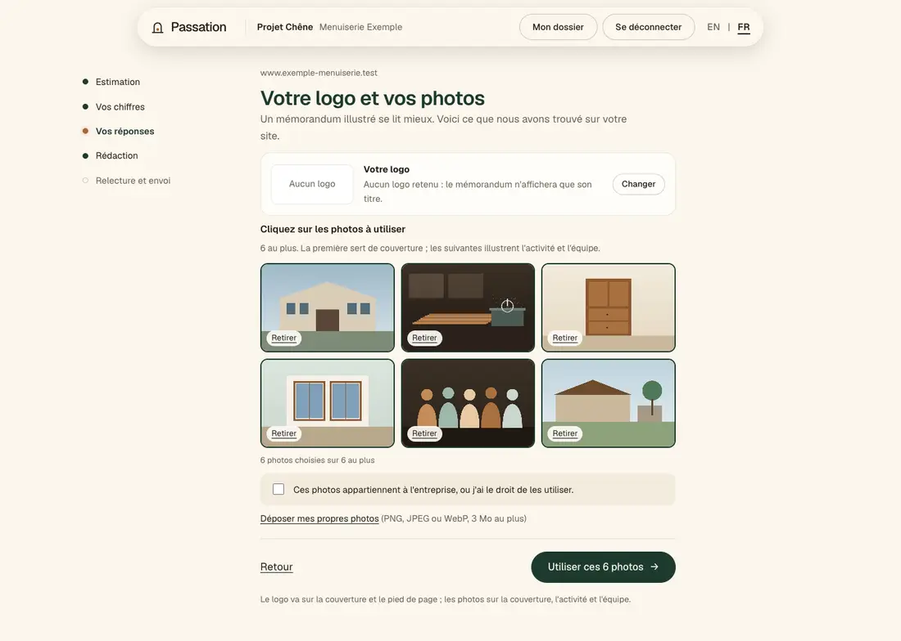
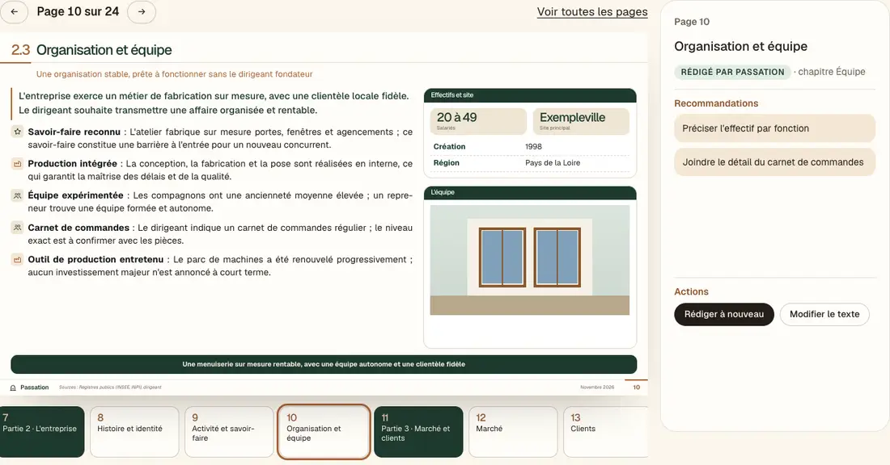
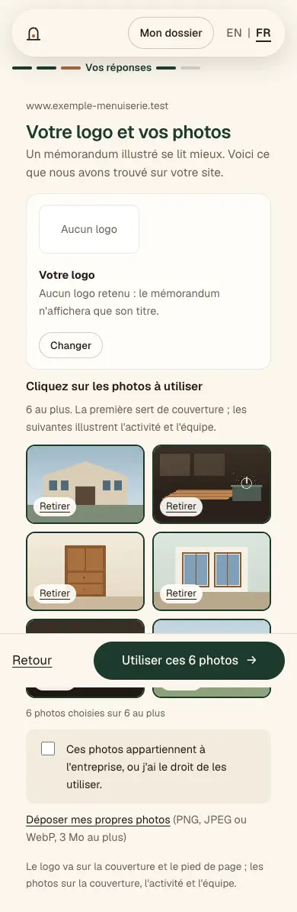

Pour chaque sujet, deux ou trois options. Celle que je recommande est encadrée en cuivre, et c'est elle que montrent les maquettes détaillées. Toutes les données sont fictives : Projet Chêne, Menuiserie Exemple, personnes « … Exemple », illustrations originales sans visage. Les maquettes sont des pages statiques : les flèches, les cases et les boutons réagissent au clic, mais rien n'est enregistré. Rien n'est implémenté dans l'application à ce stade.
La photo de l'équipe est choisie par son rang, pas par ce qu'elle montre.rangPhoto (public/js/memo-format.js) prend la 1re photo pour la couverture, la 2e pour l'activité, la 4e pour l'équipe. Sur le dossier fictif, l'encadré « L'équipe » montre donc des fenêtres (capture ci-dessous).
6 photos au plus, écrit à deux endroits.PHOTOS_MAX = 6 dans src/routes/documents.js et dans public/js/demarrer.js. À passer à 12 dans src/config.js, lu par les deux.
Le filtre du site ne voit pas les images sans dimensions.candidatsPhotos écarte déjà les SVG, les noms « logo, icon, picto… », et les images trop petites ou trop allongées, mais seulement si la page HTML donne leur largeur et leur hauteur. Un dessin, un bandeau « FRANCHISE » ou la même photo sous deux adresses passent quand ces attributs manquent. En phase 2 : lire les vraies dimensions dans les premiers octets de l'image, et repérer les doublons par empreinte.
Le logo apparaît bien sur la couverture et en pied de page.logoEntreprise est appelé sur la couverture et dans chaque pied de page (corrigé depuis le 20/11). Je le revérifierai sur un vrai logo en phase 2.
« Crédit épuisé » s'affiche comme une panne passagère.Toute erreur de Claude autre qu'une clé refusée renvoie « La rédaction a échoué. Réessayez dans un instant. » (redaction_echouee). L'erreur 400 « credit balance is too low » n'est pas reconnue. Correction prévue, pour le mémorandum, le teaser et l'analyse des photos : « Analyse (ou rédaction) momentanément indisponible », sans « réessayez dans un instant ».
L'équipe n'est pas saisie aujourd'hui.Le chapitre « Organisation et équipe » ne reçoit que trois réponses générales (rôle du dirigeant, encadrement, ancienneté moyenne). Aucun nom, aucun parcours, aucune photo de personne.
La mesure de remplissage regarde le bas de la page, pas sa surface.remplirPages agrandit le texte jusqu'à 1,3 fois, mais une page centrée paraît pleine. Mesuré par surface, deux pages du dossier fictif sont presque vides : « Axes de développement (suite) », qui ne porte qu'un axe (3 %), et « EBE retraité » (8 %). Détail dans la maquette D.
Captures « avant »
Faites en local le 23/11/2026, sur le dossier fictif (6 photos déposées), en 1440 et 390 px.

Parcours : 6 photos au plus, ni catégorie ni qualité ; l'ordre décide de tout.

Mémorandum : photo de fenêtres dans « L'équipe » ; panneau en phrases entières.Page « suite » avec un seul axe sur cinq.

Le même écran sur téléphone (390 px).
A. Jugement de Claude sur chaque photo
Recommandée
A1 · Fiche sous chaque photo
photo
Locaux · ■■■■□ « Façade du bâtiment » Proposé : couverture Pas pour le teaser [Utiliser] [Ignorer]
Tout est lisible d'un coup d'œil, sans clic. Fonctionne pareil sur téléphone (la fiche passe sous la photo). Maquette
A2 · Pastilles sur la grille, détail au clic
photo Locaux ★4
photo Équipe ★3 ⚠
photo Atelier ★4
détail de la photo cliquée
La grille reste compacte ; le jugement complet demande un clic par photo.
A3 · Un seul « plan de placement »
Couverture ← photo 1
Activité ← photos 2, 6
Réalisations ← photos 4, 7, 8
Équipe ← photo 3
[Appliquer ce plan]
Une seule validation pour tout. Plus rapide, mais on valide en bloc ce qu'on n'a pas regardé.
Modèle et coût de l'analyse1 appel par photo ajoutée, image réduite à 1 568 px de large au plus. Je propose claude-haiku-5-5 (léger) si sa qualité suffit sur une dizaine de photos de test, sinon claude-sonnet-5-5. Chaque appel est compté dans les quotas existants. Sans clé, les photos restent utilisables, sans analyse.
B. Plus de photos, mieux placées
Recommandée
B1 · Placement par catégorie, l'ordre départage
Couverture : meilleure note parmi locaux, extérieur, atelier. Activité : production et produits. Page ou bandeau « Réalisations » dès 3 photos de réalisations. Équipe : la photo d'équipe validée. À catégorie égale, l'ordre choisi par le dirigeant décide. Jamais deux fois la même photo ; affichée en grand seulement si sa résolution le permet.
B2 · Le dirigeant attribue chaque emplacement
Un menu « Où la placer ? » sous chaque photo. Contrôle total, mais une décision de plus par photo, et rien ne se passe s'il ne choisit pas.
Limite portée à 12 photos (3 Mo chacune), dans src/config.js. Réordonnables par flèches (clavier) et par glisser.
C. L'équipe dirigeante
Écran de saisie dans le parcours
Recommandée
C1 · Une carte repliable par personne
▾ Bernard Exemple · Dirigeant fondateur · Complet
nom, rôle · curseurs ancienneté et métier · formation (puces) · 1 à 3 expériences · après la cession · photo + consentement
▸ Nadia Exemple
▸ Lucas Exemple · à compléter
+ Ajouter une personne (3 sur 4)
Tout sur un écran, on voit l'équipe entière. Maquette
C2 · Une personne par écran
Personne 1 sur 3
même fiche
[Personne suivante →]
Plus guidé, mais le dirigeant perd la vue d'ensemble et fait plus de clics.
C3 · Un tableau compact
Nom | Rôle | Ancienneté | Après
… | … | … | …
parcours et photo : ouverts dans une fenêtre
Rapide à remplir sur ordinateur, pénible sur téléphone.
Page du mémorandum
Recommandée
C-A · Une carte par personne
Photo ou initiales, nom, rôle, parcours en 2 ou 3 lignes, ancienneté, place après la cession ; bandeau qui résume la transition. Maquette
C-B · Le dirigeant en grand
Met en avant le cédant et la transition ; les autres passent au second plan.
C-C · Organigramme et tableau
Sobre et dense, sans photo ; moins incarné.
Consentement (RGPD)Une case par photo : « Cette personne a accepté que sa photo figure dans le mémorandum ». Sans elle, la photo n'est ni enregistrée ni affichée : la carte montre les initiales. Noms, parcours et photos sont supprimés avec le dossier. La politique de confidentialité (FR et EN) mentionnera l'analyse des photos par l'API Claude. Le teaser n'affiche jamais de nom, de photo ni de parcours ; au plus « une équipe de direction en place », phrase écrite par le code.
D. Plus de pages presque vides
Recommandée
D1 · Fusion sous un tiers de page
Mesure par surface couverte, dans un module pur et testé. Sous 16 % (un tiers d'une page pleine), la page est fusionnée avec sa voisine de la même partie si tout tient. Sommaire et numérotation recalculés (24 → 22 pages sur le dossier fictif). Maquette
D2 · Agrandir plutôt que fusionner
Garder les pages et pousser le coefficient de taille au-delà de 1,3. Pas de page vide, mais du texte très gros sur une page qui n'a rien à dire.
Sections sans donnée : deux variantes (à choisir)1. « À compléter » reste sur place, comme aujourd'hui. 2. (Recommandée) Une seule page « Éléments à compléter » en fin de partie, qui regroupe les demandes des sections vides.
E. Relecture critique
Recommandée
E1 · Dans le panneau, avec les autres améliorations
Même liste de titres courts que F, triée par importance, point cuivre pour l'indispensable. Maquette
E2 · Rapport de relecture
Liste complète avec texte avant et après, « Oui, corriger » et « Non ». Maquette
E3 · Repères sur les pages
Pastilles numérotées sur la page, bulle au clic. Maquette
RèglesAu plus 10 remarques, en JSON validé par un schéma (page, type, correction proposée, importance). Claude ne modifie jamais un chiffre : une remarque sur un chiffre renvoie vers vos comptes ou la valorisation. « Oui, corriger » repasse le contrôle de concision (et d'anonymat pour le teaser). Modèle proposé : claude-sonnet-5-5 (lecture de tout le document). Lancée une fois à la fin de la rédaction, puis à la demande.
F. Panneau d'amélioration
Recommandée
F1 · Titres repliés, réponse dépliée sur place
● Préciser l'ancienneté de l'équipe · p. 10
○ 5 à 10 ans ● 10 à 20 ans … [Valider] [Ignorer]
● Ajouter la photo de l'équipe · p. 10
○ Varier l'introduction · Fait ✓
Une amélioration à la fois, à côté de la page qu'elle modifie ; la page affiche « Mise à jour… » puis le nouveau texte. Maquette
Comment la réponse modifie le mémo« Valider » enregistre la réponse dans les réponses du dossier (mêmes routes que le parcours guidé), met à jour la section visée, puis retire le titre ou le marque « Fait ✓ ». Une réponse proposée est pré-remplie par Passation à partir du dossier, pas par Claude. Une amélioration qui touche un chiffre renvoie vers les comptes ou la valorisation.
Appels à Claude par dossier (estimation)
Usage
Modèle proposé
Appels
Analyse d'une photo
claude-haiku-5-5, à valider par un essai
1 par photo, 12 au plus
Chapitre « Organisation et équipe » avec l'équipe
claude-sonnet-5-5 (inchangé)
0 de plus
Relecture critique
claude-sonnet-5-5
1 à la fin de la rédaction, puis 1 par demande
« Oui, corriger » ou « Valider » qui demande une rédaction
claude-sonnet-5-5
1 par correction
Soit, pour un dossier typique (8 photos, une relecture, 4 corrections), 13 appels de plus qu'aujourd'hui, tous comptés dans CLAUDE_QUOTAS.
Découpage proposé pour la phase 2
Trois PR, dans cet ordre : PR A, photos (A, B) ; PR B, équipe (C) ; PR C, pages, relecture et panneau (D, E, F). La correction du message « crédit épuisé » part dans la PR A (premier nouvel appel à Claude), pour toutes les rédactions.